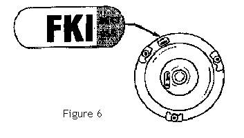

Go Home
Site Map
Go Home
Site Map
Torque Converter
Torque Converter Lockup
Why is TC locking important?
The biggest reasons are fuel economy and heat control. The TC is the car's single biggest heat generating device besides the engine. The transmission will run significantly hotter if the TC doesn't lock. Before listening to people that tell you it doesn't matter read this article from Transmission Exchange Co. How does heat affect transmission life? It will also increase heat load on the radiator since it also cools the transmission. That could lead to easier overheating if the cooling system isn't 100%. With the TC locked there is almost no heat from the transmission.
You'll also waste gas. Likely allot. One of the advantages of having a locking torque converter is that it allows the TC to be built with more "slip" which increases the torque multiplier effect. This increased multiplication translates into quicker launches but horrible fuel consumption. Once the transmission reaches top gear, the TC is locked eliminating the slip that is now just wasting fuel and making heat. This is why today's automatic transmissions both perform better and get nearly the same fuel economy as a manual transmission would.
To learn more about the locking TC, go hear--> Motor Magazine and select the May 1999 issue then go to the bottom of the next page that opens.
Testing
TH125c has a locking torque converter system controlled by 4 electrical items. They are listed in the order of their location in the circuit. (Starting at the fuse end)
- The Brake Pedal Switch. This switch opens to unlock the TC when you press the brake. It is on the brake pedal hardware.
- The Third Gear Switch. This is inside the transmission. It closes only when the transmission is in third gear.
- The Converter Lockup Solenoid. The device operates a valve that pressurizes a clutch and locks the converter.
- The ECM. The ECM switch closes a connection to ground only when the car is doing a fairly constant speed above 35mph.
There are 2 tests for problems with the Torque Converter lockup system. These tests should BOTH be done before any shift problems are looked at.
The first, and easy, test for TC lock is to press the brake while doing a constant speed over 35mph. (The test WILL NOT work if you are accelerating or slowing.) You only need press the pedal enough to activate a switch. (About 1/2" - 3/4") If the TC is working right you should see the tachometer jump up about 200RPM then drop again when you let off the brake.
The second TC test is to pull the TC lock's electrical connector. It's on the front of the transmission. Unplug it and see if you still have problems.
The second test is very important if you are stalling when stopping the car or if the car bucks badly when slowing. There are known issues with the Torque Converter Lockup Control Solenoid. This device can hang the Torque Converter Clutch in the locked mode, usually when the transmission is hot.
If the second test stops the problems then the TC control solenoid likely needs to be replaced. This repair can be done with basic tools. It's not hard just very time consuming. The Solenoid is under the side cover of the transmission. While replacing the solenoid it's a good idea to replace the Third Gear Switch, which is next to it. Then you'll have all new electrical parts in there.
If you don't see the RPM jump while doing the first test you may have a TCC apply problem. This could be electrical, TCC solenoid, TC clutch or hydraulic problems.
The test for the brake switch is in the Manual lockup section at the end of this page. The test for the Third gear switch is a bit different. If you watch ALDL terminal F with a voltmeter you'll see it go to 12V when the TG switch closes but then you'll see it drop again when the switch in the ECM closes. At this point you'll be able to watch the ECM lock/unlock the TC depending on driving conditions. This only tells you that the electrical system is OK. You could still have a hung TC solenoid or other problems in the transmission.
Once the electrical problems are ruled out then it's either solenoid hydraulic or the torque converter itself. Hydraulic or TC problems are beyond most people but if you do work on this yourself the best source of information on this is a GM document that covers the whole TC lockup system step by step. A very good general guide on this was provided to trainees at a GM seminar and is not part of the shop book. It is however on ALLdata. You may be able to get this from a friendly shop. I think ALLdataDIY.com may also have it.
Reading the TC ID Label
There are different Torque Converters used with the various engine and transmission combinations. The V6 TC may not perform properly on an L4 and vise versa. I don't think the 3T40 torque converters will work in the 4T60. (I don't have any way to check.)
The ID label may still be on many converters, here's how to read it. (The following TSB has been reduced to cover only 245mm units. The larger 298 mm units are used with inline transmissions.)
Torque Converter Identification
TRANSMISSION: GM All
BULLETIN: # 010 REVISED
SUBJECT: Torque Converters
DATE: September 1990
GM Torque Converter I.D.
The 245 mm dia torque converter I.D. code works the same way as the 298 mm converters, but with different meanings.

The first digit of a 245 mm converter refers to the application.
F = Front wheel drive
H = Rear wheel drive (except THM 180's)
S = THM 180
The second digit is the "K" factor. The chart shows the "K" factor for each code along with the stall speed. Note: Multiply the "K" factor by 11.6438 to get the stall speed of a 245 mm torque converter.
| CODE | K FACTOR | STALL SPEED |
|---|---|---|
| A | 240 | 2795 |
| B | 220 | 2560 |
| C | 205 | 2385 |
| D | 180 | 2095 |
| E | 160 | 1860 |
| F | 148 | 1720 |
| G | 140 | 1630 |
| H | 130 | 1514 |
| J | 177 | 2061 |
| K | 237 | 2760 |
| L | 163 | 1897 |
| M | 131 | 1525 |
| N | 218 | 2538 |
| Y | 122 | 1420 |
| Z | 203 | 2363 |
The third digit refers to the clutch type.
| CODE | DAMPER TYPE |
|---|---|
| 0 | No converter clutch |
| 1 | 12O ft/lb |
| 2 | 104 ft/lb |
| 3 | 170 ft/lb |
| 4 | 215 ft/lb Heavy Duty |
| 5 | 215 ft/lb *RTC |
| 6 | 170 ft/lb Heavy Duty |
| 7 | 215 ft/lb *RTC Heavy Duty |
| 8 | Viscous Clutch |
| 9 | 240 ft/lb |
| A | 215 ft/lb |
| B | 215 ft/lb *RTC |
* RTC = Reverse Torque Control (poppet valve)
The fourth digit (optional) refers to the type of cover used.
| CODE | COVER TYPE (APPLICATION) |
|---|---|
| A | FWD 208.2 mm Bolt Circle |
| B | FWD 237.0 mm Bolt Circle |
| C | FWD 237.0 mm Bolt Circle (viscous Clutch) |
| D | RWD 247.65 mm Bolt Circle |
| E | RWD 237.0 mm Bolt Circle, No Converter Clutch * |
| F | RWD 237.0 mm Bolt Circle * |
| G | RWD 247.65 mm Bolt Circle * |
| H | RWD 247.65 mm Bolt Circle, No Converter Clutch * |
| K | RWD 237.0 mm Bolt Circle, No Converter Clutch * |
| P | THM 180 ISUZU |
| R | THM 180 Opel |
| S | THM 180 BMW |
* 180 degree weld on each lug
Look at the code on the torque converter in figure 6. You can easily identify it as a front wheel drive model. (The first code is an "F"). The stall speed is 2760 (the second code is a "K"), and it has a damper assembly rated at 120 ft/lb's (the third code is a "1".) Notice that the fourth code has been omitted.
Manual TC lockup.
Warning! Manual TC locking presents a number of problems and can damage the transmission. It is potentially dangerous to drive with a manual lock active. Manual locking should ONLY be considered when the ECM has been removed such as when a carbureted engine has been installed.
Notice! This is an EXPERT level article and it assumes the ECM was unplugged and that the wiring is intact. If the harness has been cut it is up to you to return it to operating condition. This topic is only covered as an aid to installation of non-stock engines.
Manual locking of the TC WILL NOT help performance. Manual locking is used only help gas mileage on cars without an ECM. Even then it is preferred to find an automatic solution to the problem. On cars with an operational ECM, delaying the locking of the TC can help performance. This company can tell you more about that-> Transmission Exchange Co.
Before you can install a manual lock. You need to test the brake and third gear switches. BOTH switches Must work. Without both switches you cannot wire the manual switch without damaging the transmisson.
There are 2 wires on the TC lockup connector. The first wire, according to GM schematics, comes from a switch on the brake pedal. The other wire coming from the transmission connector is ground. The ECM used to ground that wire to activate the TCC. Your new switch will replace the ECM.
The brake switch. Disconnect the transmission plug and hook a test light to the wire that is always hot with the key on and hit the brake pedal. The line should go dead. If it doesn't you can't wire the switch manually. The Brake Switch MUST work or you'll have nothing but problems. Dangerous problems.
The third gear switch. This switch must also work or the TCC may try to activate as soon as you take your foot off the brake when stopped. This is not a good thing. (Same effect as dumping a clutch every time you take your foot off the brake. You WILL brake the tranny like that.)
To test the third gear switch connect a voltmeter between the TC ground wire and body ground. TCC ground is Terminal F on the ALDL. Put the meter where it can be seen while driving and have a passenger watch it. When the car goes into third the meter should swing up.
Warning! You MUST use a voltmeter for this test! Test lights may pass enough current to allow TC locking. This is not a good thing just now. This wire should only be hot when the transmission is in third gear. If you see a voltage on the line when stopped then the third gear switch is bad.
The manual lock switch is connected between the transmission ground wire and the vehicle ground. When the switch is closed the Torque Converter will lock anytime the transmission is in third gear.
Manual locking presents several problems!
You want to avoid using the manual lock except for highway driving. You don't want the tranny locking as soon as it hits third gear, which is exactly what it will do with the switch on. If the TC locks at the same time you hit third you'll likely tear up the tranny. (You also lose some performance that way.)
If you get into heavy traffic you'll want to leave it unlocked, even if the tranny stays in third.
The most obvious method to do this is a simple toggle switch. Problem is a toggle switch doesn't allow for the driver forgetting it's on. If the toggle is on then the transmission will lock as soon as it hits third gear, which isn't what we want for either reliability or performance.
The preferred way to restore TC locking is to make a speed sensor for the circuit. That way the TC will never lock below a specific speed. The ECM cutoff was no lock below 35. In most cases setting the cutoff for no lock below 35-45, and add Transmission Exchange Co.'s TCC delay unit, would return auto locking in the safest way possible. Ideally the speed sensor should only lock at relatively constant speed. It should unlock when speed changes rapidly.
A second option is to make a control with a push button. When the button is pressed the TC locks but when the brake is pressed or the transmission goes out of third gear the circuit resets and leaves the TC unlocked. This gives the same result as a simple toggle switch on the highway without some of the safety and drivability problems. (This circuit is Very easy to do and really cheap.)
Either control circuit would be fairly easy to do. There's a 2000ppm feed back to the ECM connector from the dash. There's any number of ways to make that feed close a switch at a particular speed or above.
All documents in this area are Copyright 1999,2003 D.W.Lane All rights reserved. Not for reproduction in any media without written permission.